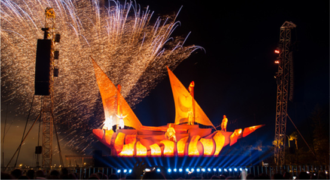

-

同志大遊行/ 2月~3月中旬
雪梨是全世界最大的同志城市之一，每年的雪梨同志嘉年華會更是吸引超過百萬的人參與，長達2週的活動以各種形式、多樣化的精采活動呈現，包括歌劇秀、表演藝術、喜劇說笑、音樂及視覺藝術等，讓遊行活動達至高潮。
看更多旅遊文章> -

-
雪梨皇家秀/ 3-4月
源自於1823年至今，每年復活節期間展出的【復活節皇家秀Sydney Royal Easter Show】，是澳洲的年度盛典已超過190年歷史，為期半個月展出澳洲鄉村特色、文化遺產及卓越的農業成果，還有許多表演活動、比賽、佳餚美酒，就像是一個大型的嘉年華！每年吸引超過1萬5千人參展，當年更因維多利亞皇后的讚賞而冠上『皇家Royal』的稱號！結合動物、農業、美食、特產、街頭藝人，適合全年齡層的人，是每年3-4月到澳洲不可錯過的盛會！
看更多旅遊文章> -
雪梨跨年煙火/ 12月31日
雪梨接近國際換日線，於是跨年煙火已成為南半球的年度大事受世人最先注目外，每年在著名的海灣景致「雪梨歌劇院」及「雪梨大橋」的襯托下施放煙火迎接新年到來，被評為此生必看的的景點之一，是以年年吸引大量的觀光客來此跨年。
看更多旅遊文章>